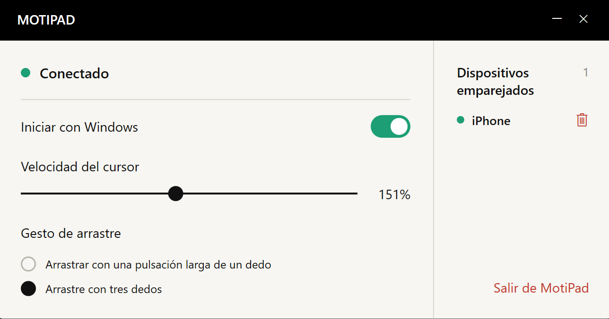

MENOS ESPACIO
¿No cabe el ratón?
Tus dedos aún pueden moverse.
No necesitas despejar una superficie para mover el ratón. Desliza los dedos por el teléfono para mover el cursor del ordenador.
Menos espacio. Un accesorio menos.
Tus gestos de siempre, en el iPhone.


La mesa de una cafetería, un rincón de trabajo improvisado o un día en el que quieres viajar ligero. Lleva el panel táctil en el iPhone que ya tienes contigo.
No necesitas despejar una superficie para mover el ratón. Desliza los dedos por el teléfono para mover el cursor del ordenador.
¿Prefieres dejar el ratón o el panel táctil en casa? Dale una tarea más al iPhone que ya llevas.
Mueve, toca y desplázate con dos dedos.
Una superficie sencilla para centrarte en la tarea.
¿Arrastras un archivo por una pantalla grande y llegas al borde del teléfono? Levanta el dedo brevemente, vuelve a apoyarlo y continúa.
Empareja tus ordenadores habituales y elige cuál controlar desde el menú del teléfono. Cambia de lugar de trabajo y sigue.
Añade tus ordenadores a la lista de emparejados.
Cambia el ordenador que controlas desde el menú.
Controla un ordenador a la vez.
Abre MotiPad y usa la pantalla del teléfono para mover, desplazarte y arrastrar.
Instala el receptor y empareja los dispositivos en la misma red local. Ajusta la velocidad del cursor y los gestos de arrastre en el ordenador.
Descarga e instala el receptor de Windows para usarlo con MotiPad en tu iPhone. El enlace al App Store se añadirá tras el lanzamiento.
Para consultas, avisos de errores o sugerencias, escríbenos.
eziojobs01@gmail.com